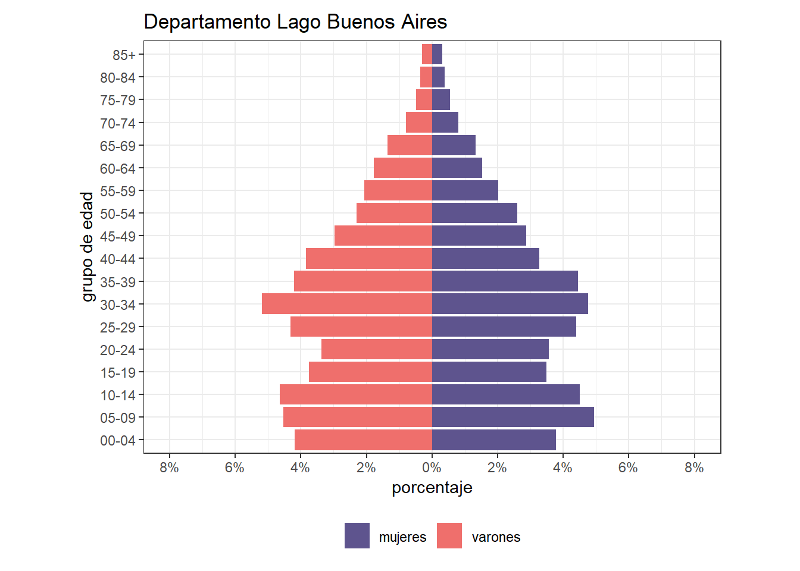
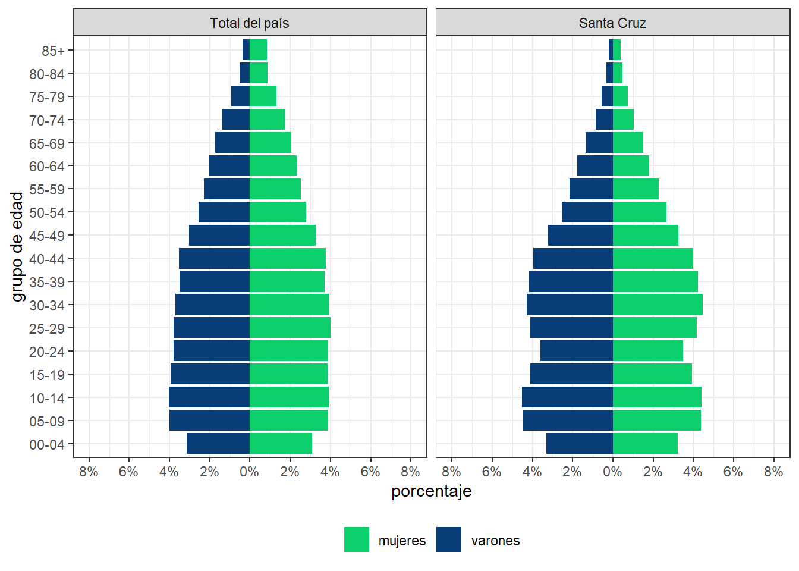

Estructura y dinámica poblacional
Maestría en Generación y Análisis de Información Estadística
Tarea #1
1. Obtenga los datos de población por sexo y grupos quinquenales para una jurisdicción seleccionado, incluyendo la desagregación por departamentos, con la última información censal disponible.
Jurisdicción elegida: Santa Cruz
Datos extraidos de REDATAM - Censo Nacional de Población, Hogares y Viviendas 2001 y 2022. Disponibles en https://redatam.indec.gob.ar/
2. Construya una pirámide poblacional jurisdiccional en función de los datos obtenidos.
Gráfico 1 Estructura de la población por sexo y grupos quinquenales de edad. Provincia de Santa Cruz. Año 2022
Fuente: elaboración propia con base en datos del INDEC. Censo Nacional de Población, Hogares y Vivienda 2022, procesado con Redatam 7.
3. Construya pirámides poblacionales para cada departamento de la jurisdicción designada.
La provincia de Santa Cruz, se divide territorialmente en 7 departamentos.
Gráfico 2. Estructuras de la población por sexo y grupos quinquenales de edad según departamento. Provincia de Santa Cruz. Año 2022

Fuente: elaboración propia con base en datos del INDEC. Censo Nacional de Población, Hogares y Vivienda 2022, procesado con Redatam 7.
4. Interprete los resultados obtenidos en los puntos 2 y 3.
5. Comente en un máximo de 400 palabras los procedimientos que siguió para obtener y procesar la información.
Una vez descargadas las tablas de datos de la provincia de Santa Cruz y sus departamentos sobre la estructura de población para los censos de 2001 y 2022 desde REDATAM, se procedió a crear una base estructurada que permitiera transformar y calcular los datos de la población en valores porcentuales del total. Este porcentaje se calcula como el cociente entre la población de un sexo y grupo de edad determinados y la población total, multiplicado por cien. Luego, se utilizan estos datos para la graficación en el lenguaje de programación R, que permite representar gráficamente la distribución de la población de un lugar, mostrando cómo se distribuyen los individuos en diferentes grupos de edad y sexo.
6. Si lo desea, puede complementar la interpretación anterior con la pirámide poblacional a nivel país. O trabajar con diferentes años censales.
Comparativo total del país y provincia de Santa Cruz censo 2001 y 2022
Gráfico 3. Estructura de la población por sexo y grupos quinquenales de edad. Total del país y Provincia de Santa Cruz. Año 2022

Fuente: elaboración propia con base en datos del INDEC. Censo Nacional de Población, Hogares y Vivienda 2022, procesado con Redatam 7.
Gráfico 4. Estructura de la población por sexo y grupos quinquenales de edad. Total del país y Provincia de Santa Cruz. Año 2001

Fuente: elaboración propia con base en datos del INDEC. Censo Nacional de Población, Hogares y Vivienda 2001, procesado con Redatam 7.
Comparativo departamental 2001 y 2022
Gráfico 5 . Estructura de la población por sexo y grupos quinquenales de edad. Departamento Corpen Aike. Provincia de Santa Cruz. Años 2001 y 2022

Fuente: elaboración propia con base en datos del INDEC. Censo Nacional de Población, Hogares y Viviendas 2001 y 2022, procesado con Redatam 7.
Gráfico 6. Estructura de la población por sexo y grupos quinquenales de edad. Departamento Deseado. Provincia de Santa Cruz. Años 2001 y 2022

Fuente: elaboración propia con base en datos del INDEC. Censo Nacional de Población, Hogares y Viviendas 2001 y 2022, procesado con Redatam 7.
Gráfico 7. Estructura de la población por sexo y grupos quinquenales de edad. Departamento Güer Aike. Provincia de Santa Cruz. Años 2001 y 2022

Fuente: elaboración propia con base en datos del INDEC. Censo Nacional de Población, Hogares y Viviendas 2001 y 2022, procesado con Redatam 7.
Gráfico 8. Estructura de la población por sexo y grupos quinquenales de edad. Departamento Lago Argentino. Provincia de Santa Cruz. Años 2001 y 2022

Fuente: elaboración propia con base en datos del INDEC. Censo Nacional de Población, Hogares y Viviendas 2001 y 2022, procesado con Redatam 7.
Gráfico 9. Estructura de la población por sexo y grupos quinquenales de edad. Departamento Lago Buenos Aires. Provincia de Santa Cruz. Años 2001 y 2022

Fuente: elaboración propia con base en datos del INDEC. Censo Nacional de Población, Hogares y Viviendas 2001 y 2022, procesado con Redatam 7.
Gráfico 10. Estructura de la población por sexo y grupos quinquenales de edad. Departamento Magallanes. Provincia de Santa Cruz. Años 2001 y 2022

Fuente: elaboración propia con base en datos del INDEC. Censo Nacional de Población, Hogares y Viviendas 2001 y 2022, procesado con Redatam 7.
Gráfico 11. Estructura de la población por sexo y grupos quinquenales de edad. Departamento Río Chico. Provincia de Santa Cruz. Años 2001 y 2022

Fuente: elaboración propia con base en datos del INDEC. Censo Nacional de Población, Hogares y Viviendas 2001 y 2022, procesado con Redatam 7.